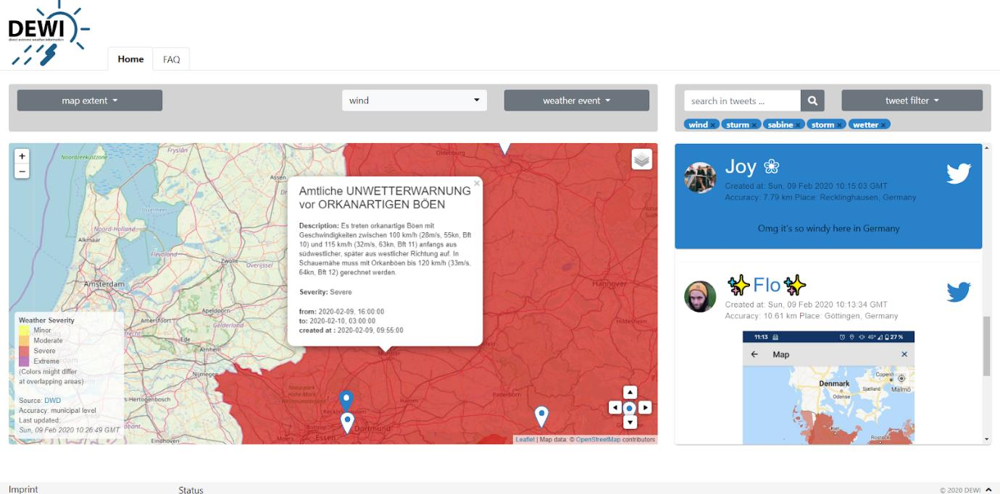
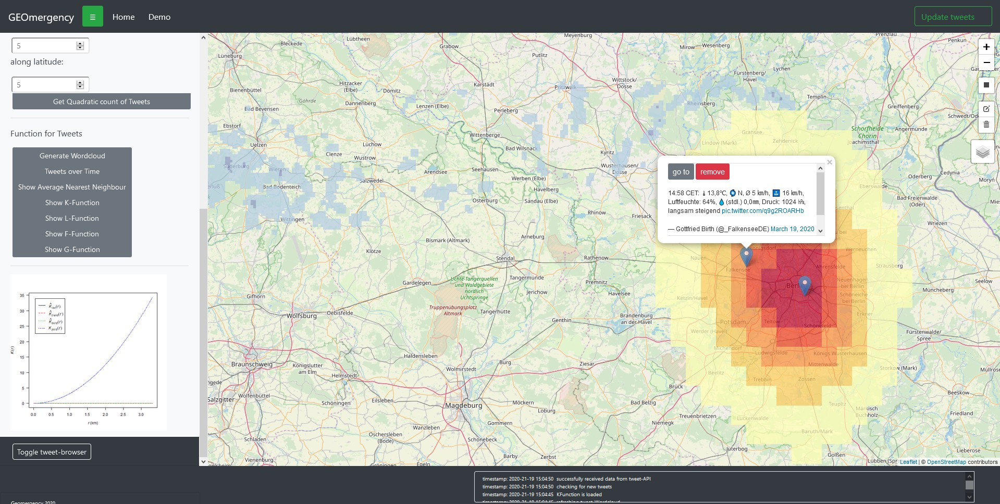
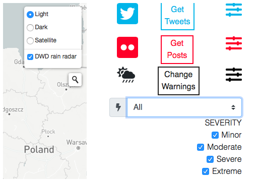
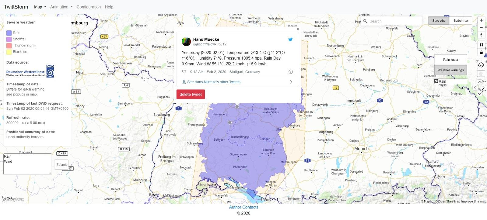

Projects
In the following we will shortly present the results of the groups. All source code is open source and available on GitHub: https://github.com/organizations/Geosoft2/
DEWI
Direct Extreme Weather Information integrates DWD extreme events data from a WMS with Twitter social media data. The application is based on Node.js and features notifications for new events using email and Mattermost chat rooms.
Code: https://github.com/Geosoft2/DEWI_Geosoft2_WS19-20_huef_jaku_nier_nisk_sten

GeoMergency
The GeoMergency project uses Node.js and R (with the plumber package) to create an API with extreme event observations and tweets.
Code: https://github.com/Geosoft2/GeoSoft2_Gruppe2

Salus Solutions
The application weathr integrates social media posts from both Twitter and Flickr and uses a Node.js backend.
Code: https://github.com/Geosoft2/Geosoftware2-1

TwittStorm
TwittStorm uses a Node.js backend to integrate DWD severe weather data and Tweets into a map, which features animation of the recent period of time to see new posts appear.
Code: https://github.com/Geosoft2/TwittStorm
